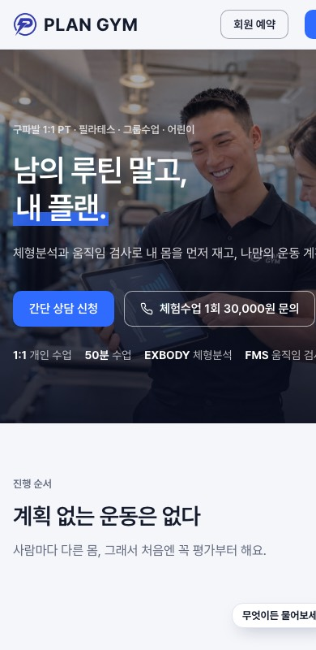

클로드로 일하는 방법, 그리고 바디움과 함께 할 수 있는 일
저는 AI(클로드)를 일꾼처럼 부려서 홈페이지, 앱, 콘텐츠, 광고 기획, 조사를 혼자 빠르게 만들어 왔습니다. 오늘은 이 방식을 바디움 사업에 어떻게 쓸 수 있을지 이야기 나누고 싶습니다.
제가 이미 만들어서 쓰고 있는 것 (눌러서 열어 보세요)
플랜짐 홈페이지PT·필라테스 스튜디오 소개와 상담 신청 사이트

- 첫 화면에서 "체험수업 문의"와 "간단 상담 신청"으로 바로 이어지게 설계했습니다.
- 평가, 프로그램, 그룹수업, 어린이, 회원 사례, 가격, 오시는 길까지 한 사이트에 담았습니다.
- 회원 예약 버튼과 채팅 문의 버튼을 모든 화면에 두었습니다.
예약·회원관리 앱예약, 남은 횟수, 선생님 일정을 한곳에서

- 예약과 취소, 남은 횟수 자동 차감, 홀딩과 만료를 처리합니다.
- 선생님 불가 시간과 휴일, 주말 당번표를 반영합니다.
- 선생님이 수락해야 예약이 확정되는 방식과 담당 선생님 고정을 지원합니다.
- 현재 개발 중이며 오픈을 준비하고 있습니다.
프리미엄임포트 홈페이지피트니스 장비 수입사 통합 사이트

- 두 브랜드(카이저, 토크피트니스)를 한 사이트에서 소개합니다.
- 제품·견적, 활용 분야, 납품 사례, 설치·A/S, 문의 메뉴를 만들었습니다.
- 견적함과 문의 양식으로 도입 문의를 받는 구조입니다.
- 제작 중인 초안 단계입니다.
작가 홈페이지 · 극장 좌석 3D 시야작품 소개 사이트와 좌석별 시야 확인 페이지
- 작가님의 작품과 소식을 담은 개인 홈페이지를 만들어 드렸습니다.
- 극장 좌석을 고르면 무대가 어떻게 보이는지 3D로 확인할 수 있는 페이지를 만들었습니다.
콘텐츠 운영 · 광고 집행블로그, 스레드, 카드뉴스, 릴스와 인스타 광고
- 아래 "콘텐츠를 만드는 방식"과 "관리하는 방식"에서 자세히 보여 드립니다.
- 인스타 광고를 직접 세팅해 돌려 보고, 소재별 반응을 비교했습니다.
제가 콘텐츠를 만드는 방식
운영하는 블로그와 SNS는 아래 순서로 반복해서 만듭니다. 사람이 판단할 곳과 AI가 빠르게 해 주는 곳을 나눈 것이 핵심입니다.
① 주제 찾기반응이 좋은 경쟁 소재와 이슈를 매일 모아 정리합니다. 무엇을 쓸지는 제가 고릅니다.
② 기획과 구조제목 후보, 핵심 요약, 글의 뼈대를 AI와 함께 짭니다. 직접 겪은 내용을 먼저 확인해 넣습니다.
③ 초안 제작정해 둔 형식으로 글, 카드뉴스, 릴스 대본 초안을 만듭니다. 카드뉴스는 표지 디자인 규칙을 고정해 두었습니다.
④ 사람 검수와 발행사실 확인과 표현은 사람이 봅니다. 자동화는 임시저장까지만 하고 발행은 사람이 누릅니다.
⑤ 숫자로 복기정해진 주기로 조회와 반응을 분석하고, 다음 글의 주제와 제목에 반영합니다.
바디움에 쓰면: 같은 틀로 지점 소개, 프로그램 설명, 후기 정리 콘텐츠를 만들 수 있습니다. 의료 관련 문구는 원장님 또는 담당자 확인을 거친 뒤에만 공개합니다.
카드뉴스와 릴스는 이렇게 만듭니다
카드뉴스원고 → 브랜드별 디자인 규칙(색, 글꼴, 말투 고정) → 화면 시안 → 이미지로 저장 → 검수 → 업로드. 표지 규칙을 미리 정해 두어 몇 장을 만들어도 같은 얼굴이 나옵니다.
릴스기획안 → 나레이션 대본 → 샷 리스트와 자막 → 커버 시안 A/B → 캡션 → 게시. 촬영과 편집은 사람이, 글과 구성은 AI와 함께 합니다.
콘텐츠는 이렇게 관리합니다
진행판 한 장아이디어마다 브랜드, 채널, 형식, 우선순위, 상태, 담당, 기다리는 것, 기획·초안·게시 링크를 한 줄로 관리합니다. 어디서 막혔는지 바로 보입니다.
역할 분담기획, 원고 제작, 영상 제작, 디자인, 광고를 나누고 각자 맡은 일만 합니다. 소재를 기획하는 쪽과 만드는 쪽이 분리되어 있습니다.
브랜드 규칙 문서브랜드별 색과 말투, 쓰면 안 되는 표현 목록을 파일로 두고 모든 작업이 먼저 읽습니다. 사람이 바뀌어도 기준이 유지됩니다.
열린 항목과 성과 기록미룬 일과 확인할 일을 목록으로 남기고, 게시물 반응 숫자는 정해진 주기로 기록해 다음 소재에 반영합니다.
바디움에 쓰면: 지점별 콘텐츠를 같은 진행판으로 관리하고, 의료·광고 표현 금지 목록을 바디움 기준으로 먼저 만들어 둘 수 있습니다.
바디움에 적용하면
1. 광고 기획과 테스트 설계소재 2~3종을 나눠 돌려 보고, 지출·도달·클릭·문의 수를 매주 한 장 표로 보고합니다.
2. 콘텐츠 틀 만들기카드뉴스, 릴스 대본, 블로그 글 초안을 빠르게 만듭니다. 올리기 전 사람이 검수합니다.
3. 문의 응대 초안과 자주 묻는 질문상담 문의에 쓸 안내문 초안을 만듭니다. 진료·처방 판단은 하지 않고 의료진 확인을 거칩니다.
4. 홈페이지·소개 페이지 제작지점 안내, 프로그램 소개, 상담 신청 페이지를 빠르게 만들어 시험합니다.
5. 시장·경쟁 조사비만 치료와 운동 관리를 함께 하는 서비스를 국내외에서 찾아 출처와 함께 정리합니다.
6. 광고 문구 사전 점검표올리기 전에 확인할 항목(약 이름, 전후 사진, 효과 표현 등)을 점검표로 만듭니다. 법률 자문은 아니며 전문가 확인을 전제로 합니다.
바디움의 숏드라마 릴스를 이렇게 도울 수 있습니다
작가와 모델을 섭외해 숏드라마 형태로 릴스를 만들고, 댓글로 문의를 받는 방식으로 알고 있습니다. 제가 이미 운영해 본 댓글 유도 릴스 광고와 같은 구조라 바로 이어서 도울 수 있습니다.
시리즈 기획에피소드별 주제, 갈등과 반전, 마지막 장면의 행동 유도 문구를 표로 짜서 작가님께 넘길 수 있는 형태로 정리합니다.
대본 초안짧은 호흡의 대사와 자막 초안을 여러 안으로 만듭니다. 최종 대본은 작가님과 바디움이 정합니다.
댓글 유도 구조 설계"댓글에 키워드를 남기면 안내" 같은 흐름과 지점별 문의 경로를 설계합니다. 댓글·DM 자동 응답 설정은 바디움 담당자가 직접 합니다.
소재 비교와 보고에피소드와 문구를 바꿔 가며 어떤 것이 댓글과 문의로 이어지는지 주간 표로 비교합니다.
같이 지킬 점: 출연자가 연기하는 광고라는 점과 광고 표시는 분명히 하고, 댓글은 실제 반응만 씁니다. 의료·효과 표현은 올리기 전에 바디움 담당자와 전문가 확인을 거칩니다.
일하는 원칙
- 사람이 최종 확인합니다. 공개 전에 바디움 담당자가 승인합니다.
- 효과나 성과를 보장하지 않습니다. 숫자는 측정한 만큼만 말합니다.
- 의료·표시광고 기준에 어긋날 수 있는 소재는 제작을 거절할 수 있어야 합니다.
- 광고 계정은 바디움이 소유하고, 광고비는 바디움이 직접 결제합니다.
- 고객 개인정보는 다루지 않습니다.
첫 한 달 시범 제안
- 지점 1~2곳, 지역 1개에서 시작합니다.
- 소재 2~3종(영상 1, 카드뉴스 1, 댓글 유도 1)을 나눠 시험합니다.
- 목표는 문의 신청이고, 주 1회 보고서 한 장으로 확인합니다.
- 정책 경고나 계정 제한이 생기면 즉시 멈춥니다.
- 한 달 뒤 결과를 보고 계속할지 함께 정합니다.
보수와 범위는 오늘 논의하고 싶습니다. 세팅만 할지, 소재 제작까지 할지, 운영 전체를 맡을지에 따라 달라집니다.
오늘 여쭤보고 싶은 것
- 지금 가장 풀고 싶은 문제는 무엇인가요? (신규 문의, 지점 홍보, 콘텐츠, 운영 자동화 중에서)
- 지점은 직영인가요, 가맹인가요? 광고 계정은 본사 하나인가요, 지점별인가요?
- 지금 광고와 콘텐츠는 누가, 어떤 방식으로 하고 있나요?
- 의료 광고 검토는 누가 하나요? (내부 의료진, 외부 전문가)
- 문의가 들어오면 어디로 받고, 몇 건 정도 오나요?
- 시범 운영에 쓰실 수 있는 월 광고 예산 범위는 어느 정도인가요?